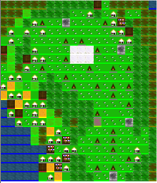

Welcome to MicroWorld!
What this is about
 MicroWorld is a rule driven cellular automaton. What does that mean? Well, it's a two dimensional world made up of squares called cells. The world develops in steps, and at each step, each cell is modified by applying the rules.
Go and watch it running for a few moments, then come back here.
The demonstration world is a mountain, with snow at the top and the sea at the bottom. as you watched, you probably saw the bright green of grass on the lower slopes of the mountain turn to the darker green of forest. You may have seen some forest fires break out.
That's all controlled by rules. You make the rules. To start Noah's flood, go to the rules page now, and add this rule at the very top:
if altitude is less than 200 then state should be water
then, go and watch the world again. What happens? You should see water spread across everywhere except the very top of the mountain. But after the flood, the waters should drain away again. Go back to rules and add this rule at the very top:
if altitude is more than 9 and state is water then state should be grassland
Now the world alternates between new and grassland. That's no good! Go back to rules and delete the rule that you first added - the one that says
if altitude is less than 200 then state should be water
And see! The world starts growing again.
What you can do next
Change some rules
Change some of the other rules and see what happens. Very likely, one of the first things that will happen is that you will get a message like this:
I did not understand 'if state is grassland then 1 chance in 10 state will be heath'
That means that you changed a rule in a way that the engine could no longer understand it. To find out what the engine will understand, have a look at the documentation.
Invent some rules of your own!
What happens when people come into the world? Where would they make their first camp? Would they want to be near the water, so they could fish? Would they want to be near fertile grassland, to graze their sheep and cattle?
Write a rule which adds some camps to the world
What happens to the land around a camp? Do the people burn down forest to make new grassland? Do they convert the grassland into meadow, or into crop?
Does growing crops reduce the soil fertility? What makes people decide that their camp is a good enough place to build a proper house?
Write some rules which describe this
How many squares of meadow or crop does it take to feed each house full of people? What happens when there are too many houses and not enough fields? Can houses catch fire? What happens to a house which is next to a fire?
How many houses do you need for a market place? Where would people build a harbour?
Change the rules completely
I've provided rules which use the MicroWorld cellular automaton to make a simple model of the changes to land in Europe after the ice age. But you don't have to use it like that, at all.
Conway's Game of Life is one of the famous uses of a cellular automaton. The rules for the Game of Life are very simple. To set up your game of life you'll need some initialisation rules, one for every cell you want to start live (we'll use black for live, and white for dead):
if x is equal to 4 and y is equal to 4 and state is new then state should be black
Add as many of these as you need for your starting pattern. Then add a rule, after all those:
if state is new then state should be white
I'll leave you to work out what the rules of life are for yourself, from the Wiki page I linked to.
CHEAT You'll find other rule sets you can explore if you go to the Parameters page.
Read the documentation
{{parser|safe}}
Implemented states
As it says in the rule language documentation, above, you can use any sequence of alphanumeric characters you want as the name of a state - you can call it whatever you like. However, if you use state names that there aren't already tiles for, and aren't already classes for in the CSS file, your states won't be displayed nicely in the World display. The states for which there are already tiles are:
-
{% for state in states %}
-
{{state}}
 {% endfor %}
{% endfor %}
API documentation
If you're adventurous you may want to modify the MicroWorld engine itself. To do that you'll need this documentation.
-
{% for component in components %}
- {{component}} {% endfor %}
For teachers
MicroWorld was written in the hope that it would be of use for teachers, particularly teachers in primary schools. The reason for attempting to write a very simple rule language was that young people would be able to create their own rules and rule sets.
Classroom setup
MicroWorld will run on a Raspberry Pi, and I plan to produce a downloadable SD card image which auto-runs it. One ideal classroom setup would be to have one Raspberry Pi running MicroWorld to every group of two or three children.
MicroWorld will also run on any ordinary PC, including Windows, Macintosh and Linux machines. I plan to produce a packaged installer for each operating system.
Servers and clients
MicroWorld is a web-app, which means it runs in a web server and the user interface is a web browser. It would be possible to arrange a classroom with one copy of MicroWorld on a single server, and each child's machine running MicroWorld from that single server.
However, many users accessing the same server at the same time may lead to poor performance. Check performance on your system before introducing a class to it, and if in doubt, running a separate copy on each machine used by children may well be more satisfactory.
If many users are using the same shared machine, you should make sure that they don't use the 'original' or 'med' versions of the Great Britain and Ireland map - both of these are big, and performance will inevitably be poor.
Subject areas
One of my main objectives in writing MicroWorld was to create a system which would be engaging for children and would enable them to see computing in the context of other subject areas.
Geography
Maps of Great Britain and Ireland, and of the Isle of Man, are included in the distribution; however, only the 'small' version of the map of Great Britain and Ireland is really useable, the others are too big and will be two slow. However, you can cut a map of your local area from the larger maps if that is helpful to your class.
The following rulesets are of potential use in geography teaching:
- basic
- A very simple ruleset which simply establishes vegetation in the landscape. Not particularly useful in itself, but a good ruleset for children to use as a basis for their own projects.
- iceage
- illustrates ice thawing gradually. Because of inadequacies in the rule language, currently the ice retreats from north to south, which is of course wrong for the northern hemisphere; but the principle of retreating ice, the way in which ice retreats up mountains, and the way in which ecosystems establish themselves.
- ecology
- Attempts to model the effects of browsers and predators - represented by deer and wolves, respectively - on the landscape.
- settlement
- illustrates human settlement appearing first on coastal promontaries (e.g. kitchen-midden people), gradually spreads inland (in this model as nomadic pastoralists), and forms permanent settlements where conditions are favourable. This helps explore why the towns in your locality are where they are. The model is obviously simplified, but produces a potentially useful account of settlement in at least north-western Europe from paleolithic up to at least late bronze age. Note that unless your map has at least some coastal promontaries this ruleset will need to be modified.
All of these rulesets are deliberately simple. This is so that children have something to start with, but so that they can actually make real, demonstrable improvements quite simply.
History
The settlement ruleset is probably the best starting point for history exploration. As described above, it essentially covers only pre-history; the development of the feudal system, for example, or of industrialisation, are not modelled. They could be, as (more advanced) class projects. Writing rules will enable discussion of why castles, or mills, are positioned where they are, and what the social consequences of these developments are.
You might also want to explore the conditions for the spread of epidemic disease - such as the black death - I've provided a state for this, but no rules.
IT/Informatics
Obviously, any of the rulesets but particularly the life ruleset are good introduction points to informatics lessons. The rule language is sufficiently simple that introducing children to writing their own rules can begin almost as soon as basic literacy is established.
In more advanced IT lessons, at the upper end of primary school or in secondary schools, I would encourage you to explore modifying the engine itself in your classes. Also, it would be interesting to write an export program which would export MicroWorld maps to Minecraft, or render them as explorable three dimensional spaces using JMonkeyEngine or NightMod.
Art and design
A number of projects, progressively more ambitious, are possible in art and design.
- The tiles I've drawn are pretty basic - again, that's intentional, children can easily produce better ones. They don't have to be 32x32, but they do all have to be the same size.
- The stylesheets providing the overall look and feel of the system could be modified
- If you have an IT project to render a 3d world, you will need 3d models of each of the states, instead of tiles. That might be a job for Blender.
Lesson plans
-
{% for lesson in lessons %}
- {{lesson}} {% endfor %}